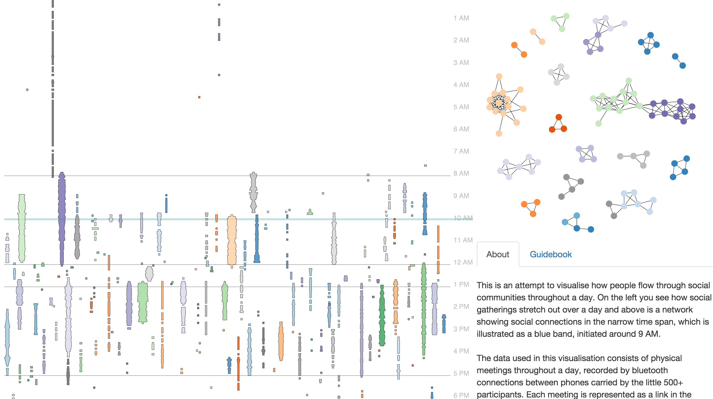
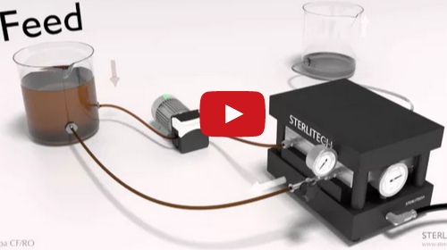
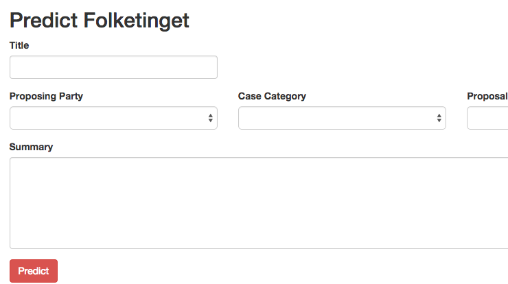
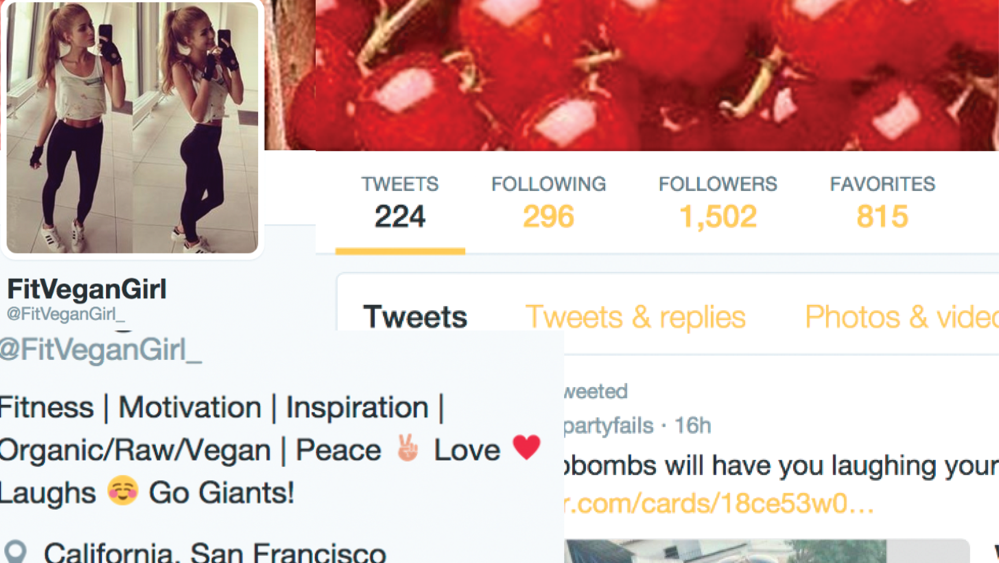
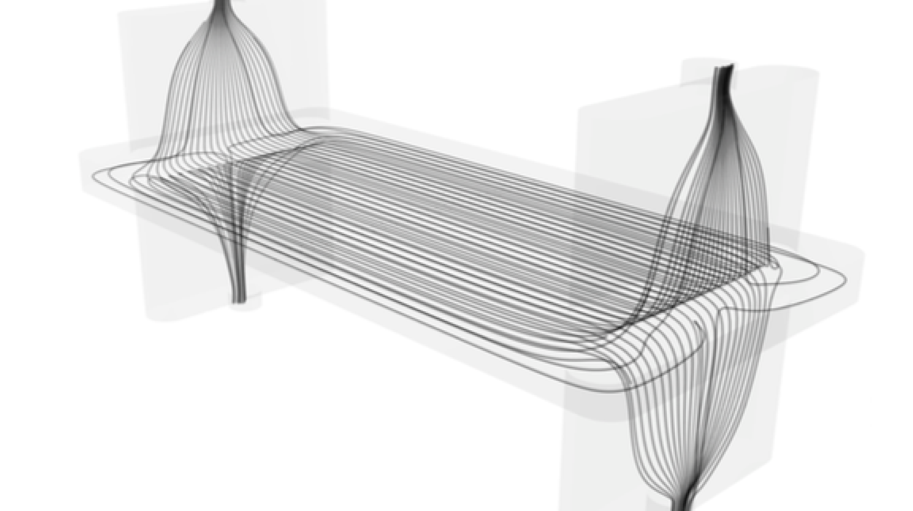

Personality Archetypes Support Evolutionarily Important Behavioral Strategies [Jun. 2016]
Master thesis written with the Uri Alon Lab. The heredity of personality suggests it is an evolutionary strategy for behavior. Independent Big Five personality datasets reveal six similar geometrical extremes, i.e. archetypes, that are linked to demographic variables, behavior and human values, and support four evolutionarily stable behavioral strategies, known from evolutionary psychology.
Communities in temporal networks [Jan. 2016]
Interactive visualization, enabling users to explore social patterns of students at the Technical University of Denmark. The project was done in collaboration with Sensible DTU as an attempt to model the dynamical structure of communities in a temporal network of human interactions. The project was awarded 1st place in the student category of the 2016 Data Stories competition by Science.
Membrane Testing System Tutorial [Jul. 2015]
A basic animated tutorial showing how to start, shutdown, or re-start Sterlitech's Sepa CF Membrane Testing System. The animation was developed, narrated and produced by Ulf and directed in collaboration with the Sterlitech Corporation. It replaces traditional costly face-to-face instruction demos.
Trustpilot review fraud detection [Jun. 2015]
A first attempt at using Machine Learning to mimick human fraud detection on the Trustpilot review service. The project was carried out in collaboration with Trustpilot and used data from over 17 million reviews. The study finds that fraud detection can be automated with 96.6 % accuracy using a Random Forest classification model.
Pointing Out Bias in Movie Critics [May 2015]
Exploratory visual analysis seeking to test the credibility of movie critics and understand just how predictable they are. The study is based on a dataset consisting of 947 critics, 17275 movies and 301409 reviews scraped from Rotten Tomatoes, and finds that movie critics are mostly biased towards liking small distributions and arty genres.
Sterlitech Sepa CF RO Cell [Feb. 2015]
3D animation showing operation of the Sterlitech Sepa CF Reverse Osmosis membrane testing module. The polluted brown fluid is pressurized against a membrane inside the module, hence driving a permeate of clean water through the membrane and into the empty reservoir.
Predicting the Danish Parliament [Dec. 2014]
Web service that allows users to get instant predictions on outcomes of elections in the Danish parliament. Analysis is based on data scraped from parliament website, which includes motion/bill specific information and including topics, inferred using Latent Dirichlet Allocation.
Why do people follow bots? [Nov. 2014]
Data Mining study to understand what draws humans to unknowingly interact with bots on social media. Using a fictious female avatar to generate followers on Twitter (2500+), the study concluded that features such as low friend reciprocity and happier usage of words were predictors for high bot susceptibility.
CFD Study of Osmotic Membrane Cells [Jan. 2014]
Bachelors degree thesis written at DTU in collaboration with Aquaporin A/S. The study seeks to understand the influence of membrane testing module geometry, on water transport across membranes, taking a numerical CFD simulation approach. Findings published in Separation and Purification Technology.